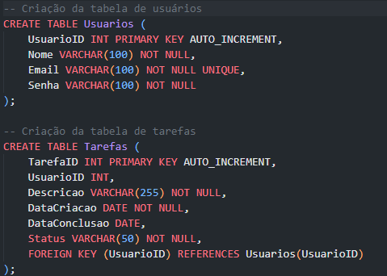

O que é?
Um servidor de banco de dados armazena, gerencia e fornece acesso aos dados de forma estruturada.
Servidor de Banco de Dados: O Coração de Muitos Sistemas
O que é um servidor de banco de dados?
Imagine um grande arquivo onde você armazena todas as suas informações importantes, como uma agenda, uma lista de compras ou um álbum de fotos. Um servidor de banco de dados é como esse arquivo, mas em uma escala muito maior e mais organizada. Ele é um software que armazena, organiza e gerencia grandes volumes de dados de forma estruturada, permitindo que diversos aplicativos e usuários acessem e modifiquem essas informações de maneira rápida e eficiente.
Exemplos de bancos de dados:
MySQL: Muito utilizado em sites e aplicações web.
PostgreSQL: Conhecido por sua robustez e flexibilidade.
SQL Server: Popular em ambientes corporativos.
Oracle Database: Um dos bancos de dados mais utilizados em grandes empresas.
Por que fazer backup de um banco de dados?
Prevenção de perdas de dados: Em caso de falhas no hardware, software ou até mesmo ataques cibernéticos, um backup permite restaurar os dados perdidos.
Recuperação de dados apagados acidentalmente: Se você excluir dados importantes por engano, um backup pode ser a sua salvação.
Testes e desenvolvimento: Ao criar um backup, você pode testar novas funcionalidades ou aplicações sem o risco de afetar os dados originais.
Backup:
mysqldump -u usuário -p banco_de_dados > backup.sql
Restauração:
mysql -u usuário -p banco_de_dados < backup.sql
